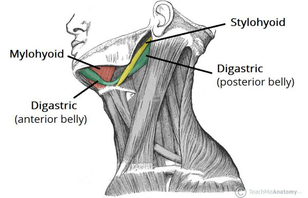
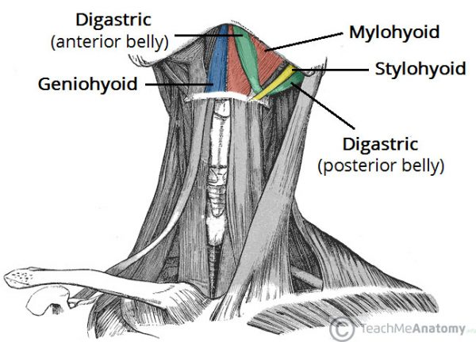
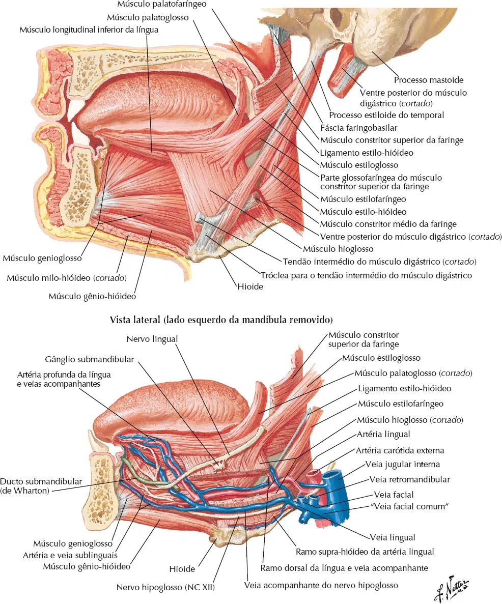

Os músculos supra-hioideos são um grupo de quatro músculos localizados acima do osso hioide, atuando em conjunto para auxiliar na movimentação da mandíbula, da língua e do próprio hioide durante funções como mastigação, deglutição e fala. Eles são:
Digástrico – Possui dois ventres (anterior e posterior) conectados por um tendão. Eleva o hioide e auxilia na abertura da boca.
Estilo-hióideo – Origina-se no processo estilóide do temporal e insere-se no hioide, tracionando-o posteriormente e superiormente.
Milo-hióideo – Forma o assoalho da boca, sustentando a língua e elevando o hioide.
Gênio-hióideo – Localizado entre o mento da mandíbula e o hioide, puxa o hioide para frente e para cima.
Esses músculos são inervados principalmente pelo nervo trigêmeo (V par craniano) e pelo nervo facial (VII par), exceto o genio-hioide, que é suprido pelo nervo hipoglosso (XII par). Sua ação coordenada é essencial para a dinâmica orofacial.
Digástrico
Inserção Superior: Ventre Anterior: Fossa digástrica da mandíbula. Ventre Poterior: Processo mastóide. Inserção Inferior: Corpo do osso hióide. Inervação: Nervo Facial (ventre posterior) e Nervo Mandibular (ventre anterior). Ação: Elevação do osso hióide e abaixamento da mandíbula (abertura da boca). O ventre anterior traciona o osso hióide para frente e o ventre posterior para trás.

https://teachmeanatomy.info/
Estilo-hióideo
Inserção Superior: Processo estilóide. Inserção Inferior: Corpo do osso hióide. Inervação: Nervo Facial (VII par craniano). Ação: Elevação e retração do osso hióide.
https://teachmeanatomy.info/
Milo-hióideo
Inserção Superior: Linha milo-hióidea da mandíbula. Inserção Inferior: Corpo do osso hióide. Inervação: Nervo Mandibular (Ramo do nervo Trigêmeo – V par craniano). Ação: Elevação do osso hióide e da língua.

https://teachmeanatomy.info/
Gênio-hióideo
Inserção Superior: Espinha mentoniana da mandíbula. Inserção Inferior: Corpo do osso hióide. Inervação: Nervo Hipoglosso (C1). Ação: Tração anterior do osso hióide e da língua.
https://teachmeanatomy.info/
NETTER: Frank H. Netter Atlas De Anatomia Humana. 8 ed. Rio de Janeiro: Elsevier, 2024.

NETTER: Frank H. Netter Atlas De Anatomia Humana. 8 ed. Rio de Janeiro: Elsevier, 2024.
NETTER: Frank H. Netter Atlas De Anatomia Humana. 8 ed. Rio de Janeiro: Elsevier, 2024.